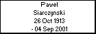
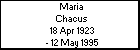
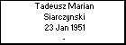

Tadeusz Marian Siarczynski
Born: 23 Jan 1951, Chrzanow
Married 1977, Chrzanów, to Zdzislawa Grazyna Pachalska
Married 2010 to Urszula po mezu Siarczynska
Occupation: Muzyk
Reference: od 3 klasy mieszkal w Chrzanowie, SP nr 3 na Alei, studia muzyczne Katowice
|